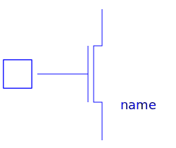
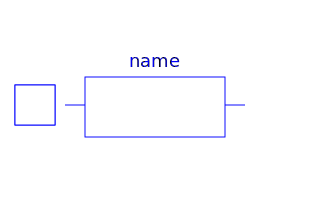

| Name |
Description |
 MOS MOS |
Metal-Oxide Semiconductor Field-Effect Transistor |
 ModelcardMOS ModelcardMOS |
Record with technological parameters (.model) |
| MOS2 |
Metal-Oxide Semiconductor Field-Effect Transistor |
| ModelcardMOS2 |
Record with technological parameters (.model) |
 BJT2 BJT2 |
Bipolar junction transistor |
| ModelcardBJT2 |
Record with technological parameters (.model) |
 BJT BJT |
Bipolar junction transistor, obsolete, use model BJT2 |
 ModelcardBJT ModelcardBJT |
Record with technological parameters (.model), obsolete model,
please use ModelcardBJT2 |
|  JFET |
Junction Field-Effect Transistor |
| ModelcardJFET |
Record with technological parameters (.model) |
 DIODE DIODE |
Diode model |
| ModelcardDIODE |
Record with technological parameters (.model) |
|  R_SEMI |
Semiconductor resistor |
| ModelcardR |
Record with technological parameters (.model) |
 C_SEMI C_SEMI |
Semiconductor capacitor |
| ModelcardC |
Record with technological parameters (.model) |
| SpiceConstants |
General constants of SPICE simulator |
| MaterialParameters |
|
 Functions Functions |
Equations for semiconductor calculation |
| SpiceRoot |
Basic records and functions |
| Model |
Device Temperature |
| Mosfet |
Functions and records for MOSFETs |
| Mos |
Records and functions for MOSFETs level 1,2,3,6 |
| Mos1 |
Records and functions for MOSFETs level 1 |
| Mos2 |
Records and functions for MOSFETs level 2 |
| Diode |
Records and functions for diode model |
| Rsemiconductor |
Records and functions for semiconductor resistor model |
| Bjt |
Records and functions for bjt model |
 Bjt3 Bjt3 |
Records and functions for bjt model, obsolete |
| Fet |
|
| Jfet |
Records and functions for Jfet |
| Csemiconductor |
|